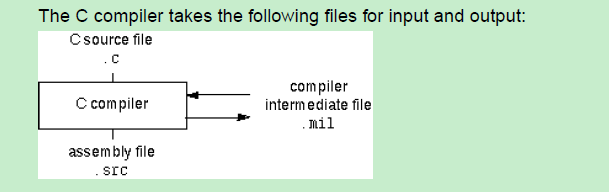
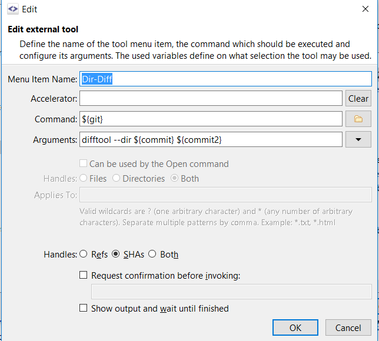

2020.01.14 Compile Process example of MT92.1E （以dd_qspi_spi_port_interface.c的编译为例）
1. 生成 dd_qspi_spi_port_interface.pre 文件
echo Building Dependency File dd_qspi_spi_port_interface.c to dd_qspi_spi_port_interface.d Building Dependency File dd_qspi_spi_port_interface.c to dd_qspi_spi_port_interface.d C:/Users/djx6b0/wkspaces/Plastic_SCM_wkspaces/17000591_MiniApp/17000591_HAL/17000591_HWIO/10013545_Tools/language/Tasking/ctc_4p3r3/bin/ctc.exe -E --core=tc1.6.x -DTASKING_4P1 --error-file --no-double --iso=99 --language=-gcc,-strings --switch=auto --align=4 --default-near-size=0 --default-a1-size=0 -ONRpfceogvIlywakmsU --tradeoff=2 --compact-max-size=200 --max-call-depth=-1 --inline-max-size=10 --inline-max-incr=35 -g --misrac-version=2004 --immediate-in-code -fC:/Users/djx6b0/wkspaces/Plastic_SCM_wkspaces/17000591_MiniApp/Products/bench_mt92p1EM_MA005_HAL001_mC1_4CYL_8VVL_1227/mt92p1EM_MA005_HAL001_mC1_4CYL_8VVL_1227.op C:/Users/djx6b0/wkspaces/Plastic_SCM_wkspaces/17000591_MiniApp/17000591_HAL/17000591_HWIO/QSPI_SPI_Port/11.Interface/dd_qspi_spi_port_interface.c -o C:/Users/djx6b0/wkspaces/Plastic_SCM_wkspaces/17000591_MiniApp/Products/depend_mt92p1EM_MA005_HAL001_mC1_4CYL_8VVL_1227/dd_qspi_spi_port_interface.pre
2. 生成dd_qspi_spi_port_interface.d
C:/Users/djx6b0/wkspaces/Plastic_SCM_wkspaces/17000591_MiniApp/MTSA_MAK/01.ToolFiles/legacy/perl5.6.1.exe C:/Users/djx6b0/wkspaces/Plastic_SCM_wkspaces/17000591_MiniApp/MTSA_MAK/01.ToolFiles/MSDev/Tasking_Tricore/tasking_1_5_c_depend.pl -O=C:/Users/djx6b0/wkspaces/Plastic_SCM_wkspaces/17000591_MiniApp/Products/bench_mt92p1EM_MA005_HAL001_mC1_4CYL_8VVL_1227/mt92p1EM_MA005_HAL001_mC1_4CYL_8VVL_1227.op -IF=C:/Users/djx6b0/wkspaces/Plastic_SCM_wkspaces/17000591_MiniApp/Products/depend_mt92p1EM_MA005_HAL001_mC1_4CYL_8VVL_1227/dd_qspi_spi_port_interface.pre -T=C:/Users/djx6b0/wkspaces/Plastic_SCM_wkspaces/17000591_MiniApp/MTSA_MAK/01.ToolFiles -SF=C:/Users/djx6b0/wkspaces/Plastic_SCM_wkspaces/17000591_MiniApp/17000591_HAL/17000591_HWIO/QSPI_SPI_Port/11.Interface/dd_qspi_spi_port_interface.c -DF=C:/Users/djx6b0/wkspaces/Plastic_SCM_wkspaces/17000591_MiniApp/Products/depend_mt92p1EM_MA005_HAL001_mC1_4CYL_8VVL_1227/dd_qspi_spi_port_interface.d -H=C:/Users/djx6b0/wkspaces/Plastic_SCM_wkspaces/17000591_MiniApp rm -f C:/Users/djx6b0/wkspaces/Plastic_SCM_wkspaces/17000591_MiniApp/Products/depend_mt92p1EM_MA005_HAL001_mC1_4CYL_8VVL_1227/dd_qspi_spi_port_interface.pre
3. 生成 dd_qspi_spi_port_interface.src
Building Assembly File dd_qspi_spi_port_interface.c to dd_qspi_spi_port_interface.src C:/Users/djx6b0/wkspaces/Plastic_SCM_wkspaces/17000591_MiniApp/17000591_HAL/17000591_HWIO/10013545_Tools/language/Tasking/ctc_4p3r3/bin/ctc.exe --core=tc1.6.x -DTASKING_4P1 --error-file --no-double --iso=99 --language=-gcc,-strings --switch=auto --align=4 --default-near-size=0 --default-a1-size=0 -ONRpfceogvIlywakmsU --tradeoff=2 --compact-max-size=200 --max-call-depth=-1 --inline-max-size=10 --inline-max-incr=35 -g --misrac-version=2004 --immediate-in-code -fC:/Users/djx6b0/wkspaces/Plastic_SCM_wkspaces/17000591_MiniApp/Products/bench_mt92p1EM_MA005_HAL001_mC1_4CYL_8VVL_1227/mt92p1EM_MA005_HAL001_mC1_4CYL_8VVL_1227.op -o C:/Users/djx6b0/wkspaces/Plastic_SCM_wkspaces/17000591_MiniApp/Products/objs_mt92p1EM_MA005_HAL001_mC1_4CYL_8VVL_1227/dd_qspi_spi_port_interface.src C:/Users/djx6b0/wkspaces/Plastic_SCM_wkspaces/17000591_MiniApp/17000591_HAL/17000591_HWIO/QSPI_SPI_Port/11.Interface/dd_qspi_spi_port_interface.c
3. 生成 dd_qspi_spi_port_interface.o 这里注意--list-file 代表顺便生成 dd_qspi_spi_port_interface.lst
C:/Users/djx6b0/wkspaces/Plastic_SCM_wkspaces/17000591_MiniApp/MTSA_MAK/01.ToolFiles/echo Building Object File dd_qspi_spi_port_interface.src to dd_qspi_spi_port_interface.o Building Object File dd_qspi_spi_port_interface.src to dd_qspi_spi_port_interface.o C:/Users/djx6b0/wkspaces/Plastic_SCM_wkspaces/17000591_MiniApp/17000591_HAL/17000591_HWIO/10013545_Tools/language/Tasking/ctc_4p3r3/bin/astc.exe -gs -il --list-file -DBREAK_AT_TRAP=0 -fC:/Users/djx6b0/wkspaces/Plastic_SCM_wkspaces/17000591_MiniApp/Products/bench_mt92p1EM_MA005_HAL001_mC1_4CYL_8VVL_1227/mt92p1EM_MA005_HAL001_mC1_4CYL_8VVL_1227.op -o C:/Users/djx6b0/wkspaces/Plastic_SCM_wkspaces/17000591_MiniApp/Products/objs_mt92p1EM_MA005_HAL001_mC1_4CYL_8VVL_1227/dd_qspi_spi_port_interface.o C:/Users/djx6b0/wkspaces/Plastic_SCM_wkspaces/17000591_MiniApp/Products/objs_mt92p1EM_MA005_HAL001_mC1_4CYL_8VVL_1227/dd_qspi_spi_port_interface.src
2020.01.15 smartgit 配置beyond compare 为diff工具
1.Add below configurations to .gitconfig
[diff]
tool = bc3
[difftool]
prompt = false
[difftool "bc3"]
cmd = \"c:/program files (x86)/beyond compare 3/bcomp.exe\" \"$LOCAL\" \"$REMOTE\" -expand -solo
2.Edit -> Preferences -> Tools -> Add
